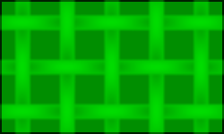

This simple example creates an automated sequence of transitions, that runs through a series of colored flags, fading from one to the next.

The demo script shows just how easy it is to automate transitions.
⇥ Powered by Image Transitions 2.0